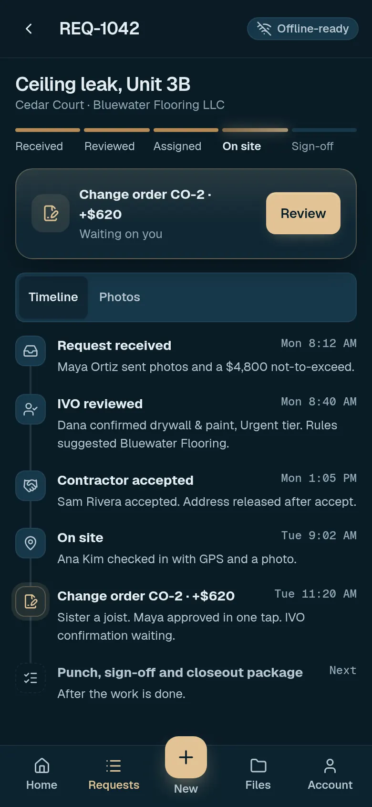
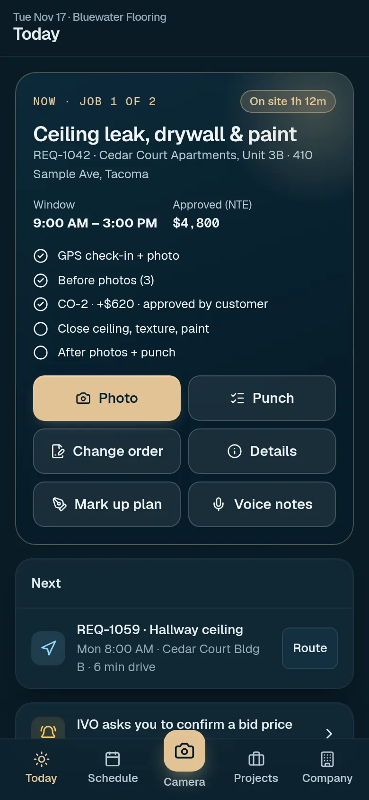
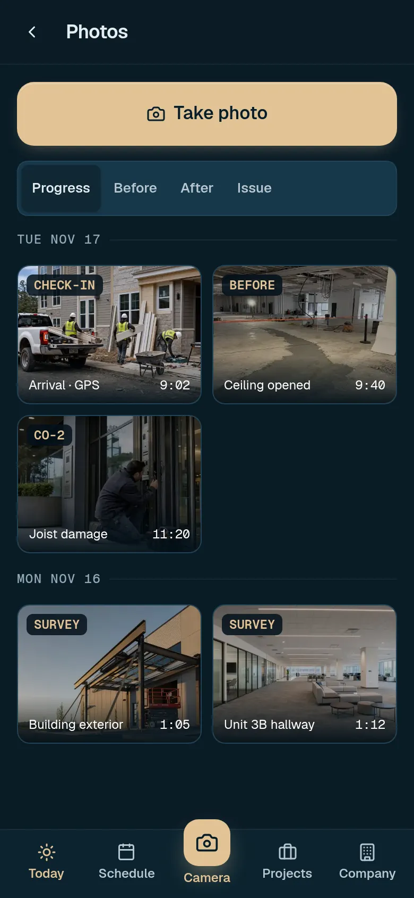
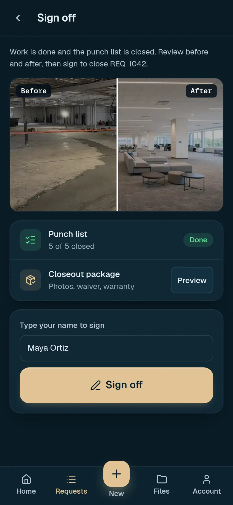

Consultant
Before anyone prices anything, we help you define the requirement: what's fixed, what's open and what still needs a decision.
- Site review & condition notes
- Scope definition & options
- Budget ranges for decisions
- Bid package preparation
One relationship for planning, communication and commercial property support—with responsibilities defined for each project.
Every request follows the same visible steps, so you know where it stands and who has the next action.
Share the location, desired result, timing and available documents. A request gives the team a starting point; it does not authorize work.
IVO reviews the need and coordinates next steps. Eligible providers submit their own scope, pricing, exclusions and availability.
Document IVO’s role, the contracting parties, scope and authorizations. Required qualifications and project review must be completed before work begins.
Use your assigned project workspace for updates, questions, change requests and documents. Review the completion package and record acceptance when the scope is complete.
IVO’s delivery role and the contracting arrangement are confirmed for each project. A request, budget, quote or planning assignment does not authorize work or payment.
A short animated explainer, with voice-over and subtitles, that follows one commercial request from the first call to a documented closeout.
IVO can take on any of these three roles, depending on what the property needs. Your role for each project is confirmed in writing before work starts.
Before anyone prices anything, we help you define the requirement: what's fixed, what's open and what still needs a decision.
When IVO runs the project, we own the schedule, the trades, the site and the communication through closeout.
Independent businesses and suppliers bring the specialty capacity. They're matched to your work by trade, region and requirement.
The same visible steps for customers, and a parallel path for the contractors and vendors who do the work.
One form or one call. Location, condition, photos, plans, timing and budget range.
YouWe set a priority tier, confirm receipt, assign your IVO lead and invite you to your project workspace.
IVOSite visit or call, questions answered, scope written with inclusions and exclusions.
IVO + youTrades matched by trade and region, then bid or assigned. You see one clear proposal.
IVO + networkYou approve. We schedule, coordinate and post photo updates. Changes come to you before they happen.
IVOCompletion photos, punch list, documents and invoice, all saved with the request.
IVO + youTell us your trades, regions, crew capacity and the work you want.
YouUpload your business documents once. We check them and remind you before they expire.
IVOReceive packages that fit your trade and region, with files, scope and deadlines already attached.
IVOAsk questions, submit a price or accept a direct assignment, all in the portal.
YouCheck in on site, post photos and flag issues. IVO handles the customer.
You + IVOSubmit closeout items, get sign-off and invoice against the approved scope.
You + IVOA sample walkthrough of the IVO workspace, using preview data. It follows one request as it is scoped, assigned to a technician, updated in the field, and closed out with photos and a written record.

You send the need, photos and timing. This sample is a hallway leak at Cedar Court Apartments.

IVO writes a scope and budget you can review before work starts. Status and next steps stay on the request.

A matched technician is assigned. They see the window, checklist and site details on today's job card.

Photos and notes land on the request as work happens, including check-in, progress and issue shots.

Completion photos, punch items and a written record you can sign off, saved with the request.
Response targets are written down by priority, with a separate clock for reply, site visit and next step.
Broken storefront or entry, active leak, impact damage, an opening that can't be locked.
A failed door closer, a damaged fixture in a public area, a repair blocking a tenant.
Drywall and paint repairs, suite make-ready, hardware, flooring and finish work.
Tenant improvements, renovations, GC trade packages and multi-trade projects.
Business hours are Monday–Friday. Arrival times depend on location, access and safety conditions, and we always give you a confirmed estimate on the call. A submitted form does not dispatch a crew, so for emergencies always call.
The more of this you share up front, the faster the scope comes together.
Clear boundaries keep everyone protected.
A request, budget, quote or planning assignment gives the team a starting point. It does not authorize work or payment.
IVO’s delivery role, the contracting parties, the scope and the authorizations are documented for each project before work begins. A logged change request is not an approved change order.
For emergencies, always call (206) 539-9549. A form does not dispatch a crew.
If you already work with a technician or trade you trust, you can invite them to join IVO. They complete the same license, insurance and document checks as every other network member, and IVO then manages the scope, scheduling, quality checks, closeout photos and records on their jobs. You’ll find Invite your vendor in your workspace once you have an account.
Still have a question? Call (206) 539-9549 or email office@ivoservgroup.com.
IVO can consult on scope, run a project as the general contractor or coordinate independent trades from the network, depending on what the property needs. The role for each project is written down before work starts.
No. Send the basics without creating an account. The portal is invite-only: after IVO reviews your request, the authorized contact is invited by email to your own project workspace.
Network businesses apply and are reviewed by trade, service area and fit. For a specific project, eligible providers submit their own scope, pricing, exclusions and availability, and IVO coordinates the next step with you.
The change is raised in the project workspace with its effect on scope, cost and timing. It is only treated as authorized once the appropriate decision is documented.
Tell us what the property needs. We’ll help identify the appropriate next step.